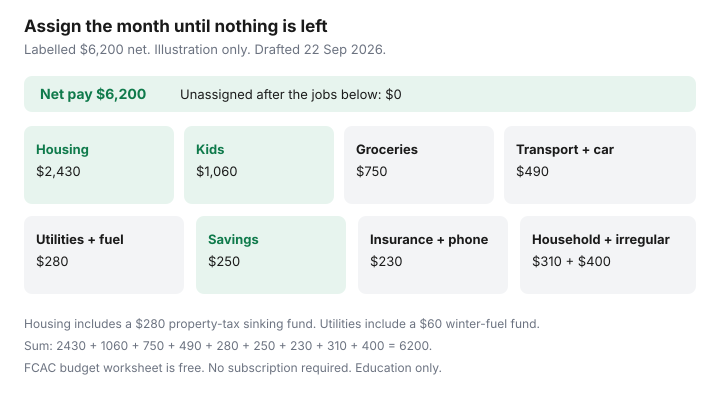

Personal Finance · Canada
Zero-Based Budgeting for Canadian Households: A Monthly System That Survives Variable Bills
A budget that is a vibe in January is a hydro bill in February and a property-tax instalment in March. Zero-based budgeting means the month’s net pay is assigned until the unassigned line is zero, including the bills that do not arrive every month. The system dies when those bills are “surprises” instead of envelopes you filled on purpose.
This is a monthly operating system for a household with kids, a mortgage or rent, and Canadian bills that swing. It is not a personality test and not a subscription. FCAC’s budgeting pages were used 22 Sep 2026. The dollar example is labelled. Copy the categories, not the amounts.
Disclosure: No affiliate offer is a natural fit for this system. A spreadsheet, a pencil, or the free budget worksheet on Canada.ca is enough. Saving Optimizer does not claim a budgeting-app partnership and does not recommend a paid subscription as the method. Education only, not financial advice.
Key takeaways
- Assign the month’s net pay until unassigned cash is $0. Savings, debt, and sinking funds are jobs, not leftovers.
- Canadian categories that break generic apps: property tax, hydro, winter fuel, childcare, and annual insurance. Average them into monthly sinking funds.
- Irregular income gets a percentage skim the day it lands, then a zero-based assignment of what remains. The skim is pay yourself first.
- One adult owns the sheet. Both adults do a 20-minute sync. The agenda is the next 30 days, not a verdict on groceries.
- If you abandon the sheet two months in a row, drop to three buckets: fixed PADs, variable spending, sinking funds. A lighter system you run beats a perfect system you quit.
Give every dollar a job before the month starts
Use net pay that will actually land this month: the two bi-weekly deposits, or the semi-monthly pair, after tax, CPP, EI, and any payroll deduction you already committed (a pension, a group RRSP match). Do not budget gross. Do not budget last year’s bonus.
List jobs in this order so the flexible lines are what shrink, not the rent:
- Housing PAD and any debt minimums.
- Sinking funds for bills that are lumpy.
- Groceries and transport you will buy this month.
- A minimum registered transfer if room and the emergency gap allow it. Room rules are TFSA room. The debt order, if balances are expensive, is the household payoff plan.
- Everything else, including a named “irregular” envelope so the first unplanned bill does not become a card.
Unassigned must hit zero before the month starts. If you are short, cut a flexible job. If you are over, the extra is a job too: emergency gap, the highest-rate debt, or next month’s sinking fund. Leaving it “in chequing” is how it becomes takeout.
Build categories that match Canadian bills (property tax, hydro, winter fuel)
Importing a U.S. envelope list misses the bills that wreck Canadian months. Add these even if this month’s statement is quiet:
- Property tax. If the lender escrows it inside the mortgage PAD, do not budget it twice. If you pay the municipality in instalments, divide the annual bill by 12 and move that amount to a named savings pot every month. A $3,360 bill is $280 a month. The pot, not willpower, pays the instalment.
- Hydro and heat. Equal-billing or budget-billing plans exist at many utilities and are a different topic. If you are on actual reads, budget a shoulder-season average plus a winter sinking fund. A July bill of $80 and a January bill of $280 are the same year. The sinking fund is the difference you did not spend in July.
- Tenant or home insurance if it is annual. Same divide-by-12.
- Childcare and kids’ activities as separate lines. Camp in July is not “groceries went over.”
- GST/HST credit, CCB, or a tax refund only in the month they are scheduled. Do not inflate a normal month with a quarterly credit. A refund has its own triage: HISA, debt, or registered.
| Job | This month | Why it is a job |
|---|---|---|
| Housing (mortgage $2,150 + tax sinking $280) | $2,430 | Tax instalment will not negotiate |
| Utilities average $220 + winter fuel sinking $60 | $280 | January is not a moral failure |
| Groceries | $750 | Variable, but still assigned |
| Kids (childcare $980 + activities sinking $80) | $1,060 | Camp and registration are annual |
| Transport ($180) + car payment ($310) | $490 | The car payment is contractual |
| Insurance $140 + phone $90 | $230 | Fixed, easy to forget |
| TFSA minimum $150 + emergency $100 | $250 | Savings is assigned, not leftover |
| Household, personal, giving | $310 | Named, so it can be cut first |
| Irregular envelope | $400 | The unplanned bill’s parking spot |
Add the column: $2,430 + $280 + $750 + $1,060 + $490 + $230 + $250 + $310 + $400 = $6,200. Zero unassigned. If groceries run $90 hot, the irregular envelope gives up $90. You do not “figure it out” from the tax sinking fund. That pot is already employed.

Handle irregular income and annual lump costs with sinking funds
Commission, overtime, a side contract, or a shift premium does not get spent because it was not on the calendar. On the day it lands, skim a percentage to the emergency HISA or the highest-rate debt — the same percentage rule as payday automation — and only then assign the remainder to jobs that are actually short this month. A $0 unassigned line still applies to the windfall. “We earned it” is not a category.
Annual lumps get a sinking fund even when the bill is nine months away. Open a savings pot and nickname it: Property tax, Winter fuel, Car repair, Kids registration, Annual insurance. Move the monthly slice the day after payday, with the other skims. The pot should not be the chequing float that grocery debit hits. Digital banks that allow several accounts make the nickname obvious. A spreadsheet tab works if your bank will not.
When the bill arrives, pay it from the pot. If the pot is short, you have a forecasting error to fix next month, not a reason to abandon categories. If the pot is over, lower next year’s monthly slice. Do not raid it for a weekend because it “looks fat” in October. October is when the gas bill is still polite.
Couple workflow: one owner, weekly 20-minute sync
Two people updating one sheet is how the sheet dies. One owner (the closer) enters PADs and moves sinking funds. Both adults attend one 20-minute sync, same weekday, phones down. A useful agenda:
- What landed, and what left, since last sync. Two minutes.
- Which envelope is thin before the next payday. Five minutes.
- One decision: move dollars between flexible jobs, or leave them. Five minutes.
- Anything annual coming in the next 30 days (tax instalment, insurance, registration). Five minutes.
- Stop. No retrospective on coffee.
Shame language (“you blew groceries”) ends the system faster than a hydro spike. The category was either too small or the rule was ignored. Fix the number or the rule. If spending is a conflict about something other than dollars, the spreadsheet will not settle it. The money meeting stays about the next 30 days.
Tools that work without expensive subscriptions
FCAC’s “Making a budget” material on Canada.ca is a free worksheet and a plain-language order of operations. A spreadsheet with one row per job and a column per month is enough. Bank sub-accounts or nicknamed savings pots hold the sinking funds so the math is not only a cell.
A paid app is optional and not required for the method. If you already pay for one and you open it, keep it. If you are about to subscribe so the budget feels official, decline. The failure mode is an app you do not update, not a missing feature. Calendar reminders for the sync and for each instalment date do more than a dashboard.
Keep the sheet where both adults can see it. A private app on one phone is a second set of books. The 20-minute meeting needs one number for “unassigned.”
When zero-based is too heavy—and what to run instead
Quit the full sheet if you miss two months in a row. Replace it with three buckets you will actually run:
- Fixed PADs in the bill-pay account: mortgage or rent, insurance, car payment, childcare, phone. Fund it the day after payday with the exact sum. NSF design for that account is alerts and a float.
- Variable spending for groceries, fuel, and household. One number. When it is gone, it is gone.
- Sinking funds for property tax, winter fuel, and annual kids’ costs. Automate the transfer. Do not “see how the month goes” before you move them.
Keep a minimum payday skim to the emergency HISA even in the lighter system. Leftover budgeting is how February wins. You can return to a full zero-based month in a quieter season. The point is a system that is still running when the gas bill is not.
Sources & date stamps
- FCAC / Canada.ca, Making a budget — household budgeting guidance used 22 Sep 2026. The worksheet there is free.
- The $6,200 month is a labelled illustration so the jobs sum to zero. It is not a recommended spending level and not a city tax rate.
- Property tax, hydro, and fuel are municipal and utility bills. Equal-billing programs, where you use them, are the utility’s plan. Confirm the instalment schedule on your own bill.
- Saving Optimizer — payday skim and TFSA room guides for the savings line. Room is a CRA figure, not a budget vibe.
Frequently asked questions
What does zero-based mean if I already have savings?
It means this month’s net pay is fully assigned, including a transfer into savings. Existing savings are not the budget. Unassigned pay sitting in chequing is the failure, even when a HISA balance looks healthy.
How do I budget property tax if the bank pays it?
If the mortgage PAD already includes a tax portion, that PAD is the housing job. Do not also set aside the full tax bill. If you pay the city yourself, divide the annual bill by 12 and automate that slice into a named pot.
What if our income changes every month?
Skim a percentage to savings or high-rate debt the day the deposit lands. Assign what remains until unassigned is zero. Do not build the month on a hoped-for commission.
Do we need a budgeting app?
No. A spreadsheet and nicknamed savings pots are enough. FCAC publishes a free budget worksheet. A subscription is not the method, and this page does not recommend one.
What if we quit after six weeks?
Switch to three buckets: fixed PADs, one variable spending number, and automated sinking funds for tax, winter fuel, and annual kid costs. A lighter system you keep is the system. You can return to a full zero-based month later.